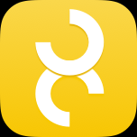

-
- Make sure your iOS device and your Mac are on the same Wi-Fi network.
- Open the Audio MIDI Setup app on your Mac.
- Select Show MIDI Studio from the Window menu.
- Double click the Network icon to open MIDI Network Setup.
- If there's no session, add and enable a MIDI Network Session.
- Select your device from the Directory.
- Wait for On the 8 to connect. If it fails the first time, try again.
- Once connected, open your DAW of choice, like Ableton Live.
- Open your DAW's MIDI preferences settings and enable Sync on the Network Session Output.
- Hit Stop then Play on your DAW. On the 8 should begin playing.
-
- Open on the 8, tap on a song to get to the Songs view, tap on the Bluetooth icon in the lower right corner of the screen.
- Turn on Advertise MIDI service.
- On your Mac, open the Audio MIDI Setup app.
- Select Show MIDI Studio from the Window menu.
- Double click the Bluetooth icon in the MIDI Studio window.
- Your iOS device should appear in the device list, click its Connect button.
- Once connected, open your DAW of choice, like Ableton Live.
- Open your DAW's MIDI preferences settings and enable Sync on your device's Bluetooth Output.
- Select a song in On the 8.
- Hit Stop then Play on your DAW. On the 8 should begin playing.
-
- Use the USB Camera Adapter to plug a USB MIDI interface into your iOS device.
- On the 8 should connect.
- Connect your iOS device's MIDI in to a MIDI clock source.
- Hit Play on your MIDI clock source. On the 8 should begin playing.
-
- Create a new MIDI track in your DAW.
- Set the MIDI output of the track to the MIDI interface that's connected to your iOS device.
- Any MIDI notes played on this track will be displayed in the upper right corner of On the 8.
-
- Create a new MIDI track in your DAW.
- Set the MIDI output of the track to the MIDI interface that's connected to your iOS device.
- If using Ableton Live, create a new MIDI clip in that MIDI track.
- Draw in some automation for MIDI CC 1 - (Modulation). On the 8 songs' CC value maps to the current incoming MIDI CC 1 value. Changing MIDI CC 1 selects and shows the corresponding song in On the 8. If no match exists, the CC 1 messages are ignored.

On the 8 is a MIDI clock display for coordinated performance.
It shows the progress of a song in the context of an adjustable bar interval. It also displays BPM, elapsed time, song title and either key or received MIDI notes.